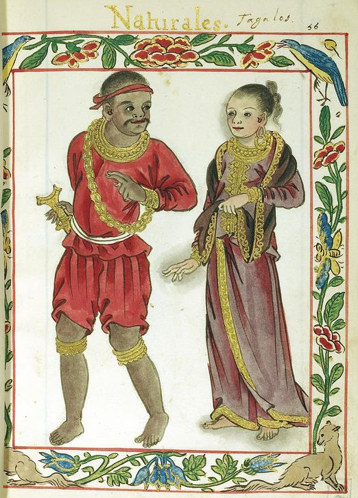
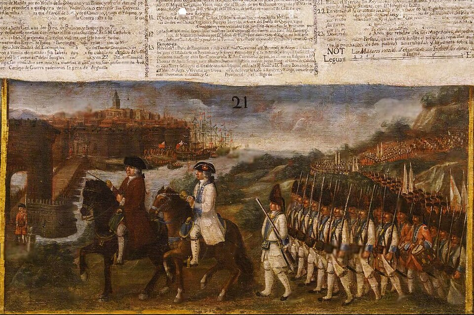
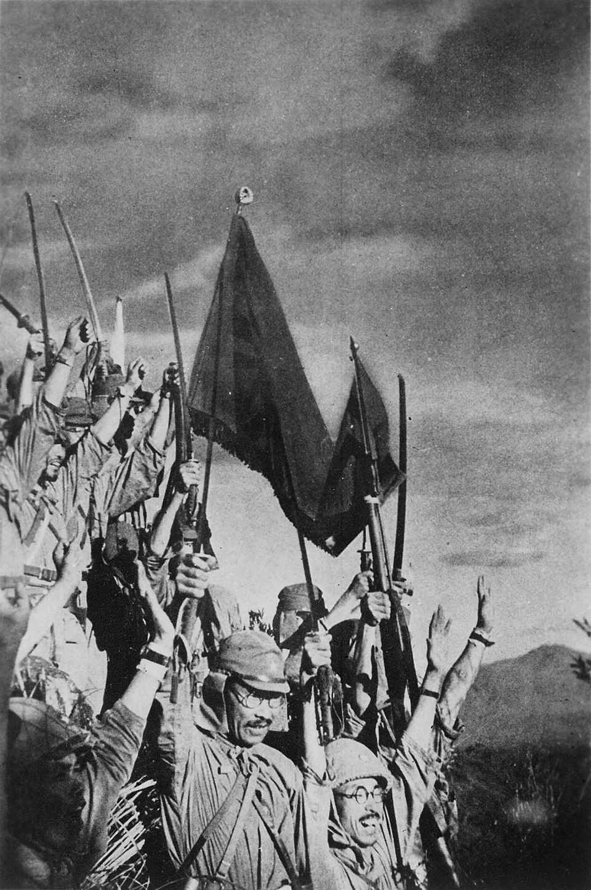
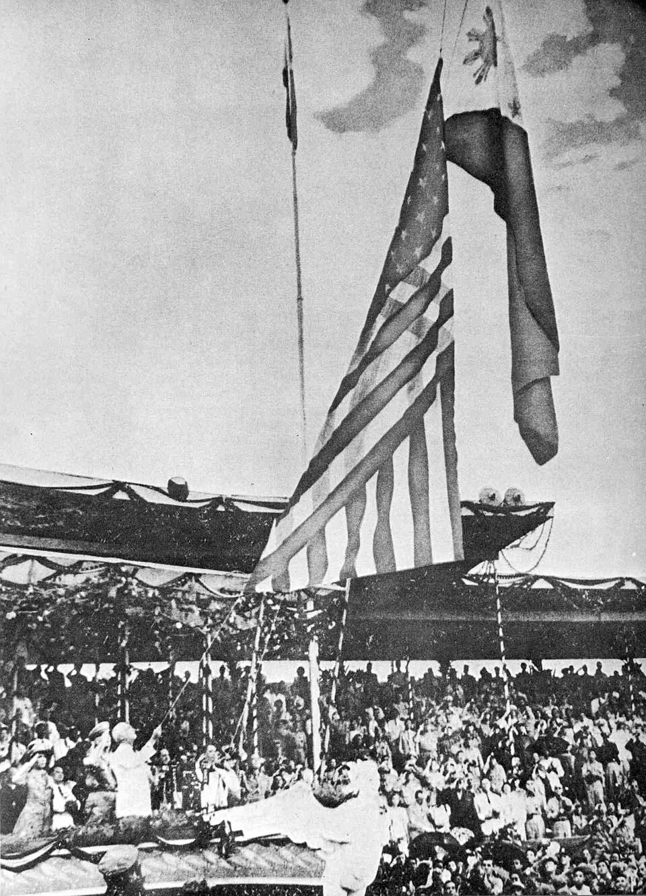
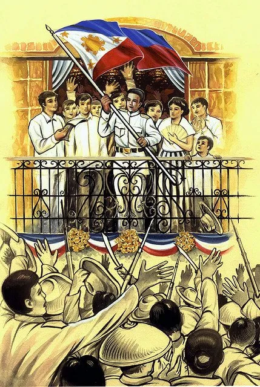

The Philippines, officially the Republic of the Philippines, is an archipelagic country in Southeast Asia. Located in the western Pacific Ocean, it consists of about 7,641 islands, with a total area of about 300,000 square kilometers, which are broadly categorized in three main geographical divisions from north to south: Luzon, Visayas, and Mindanao. With a population of over 112 million, it is the world's fourteenth-most-populous country.
The Philippines is bounded by the South China Sea to the west, the Philippine Sea to the east, and the Celebes Sea to the south. It shares maritime borders with Taiwan to the north, Japan to the northeast, Palau to the east and southeast, Indonesia to the south, Malaysia to the southwest, Vietnam to the west, and China to the northwest. It has diverse ethnicities and a rich culture. Manila is the country's capital, and its most populated city is Quezon City. Both are within Metro Manila.

The recorded pre-colonial history of the Philippines, sometimes also reffered to "protohistoricperiod" it begins with the creation of the Laguna Copperplate Inscription in 900 AD and ends with the beginning of Spanish colonization in 1565. The inscription on the Laguna Copperplate Inscription itself dates its creation to 822 Saka (900 AD). The creation of this document is considered to mark the end of the prehistory of the Philippines on Monday, April 26, 900 AD, and the formal beginning of its recorded history. During this historical time period, the Philippine archipelago was home to numerous kingdoms and sultanates and was a part of the Indosphere and Sinosphere.
Sources of precolonial history include archeological findings; records from contact with the Song dynasty, the Brunei Sultanate, Korea, Japan, and Muslim traders; the genealogical records of Muslim rulers; accounts written by Spanish chroniclers in the 16th and 17th centuries; and cultural patterns that at the time had not yet has been replaced through European influence.

The history of the Philippines from 1565 to 1898 is known as the Spanish colonial period, during which the Philippine Islands were ruled as the Captaincy General of the Philippines within the Spanish East Indies, initially under the Viceroyalty of New Spain, based in Mexico City, until the independence of the Mexican Empire from Spain in 1821. This resulted in direct Spanish control during a period of governmental instability there.
The first documented European contact with the Philippines was made in 1521 by Ferdinand Magellan in his circumnavigation expedition, during which he was killed in the Battle of Mactan. 44 years later, a Spanish expedition led by Miguel López de Legazpi left modern Mexico and began the Spanish conquest of the Philippines in the late 16th century. Legazpi's expedition arrived in the Philippines in 1565, a year after an earnest intent to colonize the country, which was during the reign of Philip II of Spain, whose name has remained attached to the country.

The Kingdom of Great Britain occupied the Spanish colonial capital of Manila and the nearby port of Cavite for eighteen months, from 6 October 1762 to the first week of April 1764. The occupation was an extension of the larger Seven Years' War between Britain and France, which Spain had recently entered on the side of the French.
The British wanted to use Manila as an entrepôt for trade in the region, particularly with China. In addition, the Spanish governor agreed to deliver a ransom to the British in exchange for the city being spared from any further sacking. However, the resistance from the provisional Spanish colonial government, established by members of the Royal Audience of Manila and led by Lieutenant Governor Simón de Anda y Salazar, whose mostly Filipino troops prevented British forces from expanding their control beyond the neghbouring towns of Manila and Cavite, led to the project's abandonment.

The history of the Philippines from 1898 to 1946 is known as the American colonial period, and began with the outbreak of the Spanish American War in April 1898, when the Philippines was still a colony of the Spanish East Indies, and concluded when the United States formally recognized the independence of the Republic of the Philippines on July 4, 1946.
With the signing of the Treaty of Paris on December 10, 1898, Spain ceded the Philippines to the United States. The interim U.S. military government of the Philippine Islands experienced a period of great political turbulence, characterized by the Philippine American War.
A series of insurgent governments that lacked significant international and diplomatic recognition also existed between 1898 and 1904
Following the passage of the Philippine Independence Act in 1934, a Philippine presidential election was held in 1935. Manuel L. Quezon was elected and inaugurated as the second president of the Philippines on November 15, 1935. The Insular Government was dissolved and the Commonwealth of the Philippines, intended to be a transitional government in preparation for the country's full achievement of independence in 1946, was brought into existence.

The Japanese Empire occupied the Commonwealth of the Philippines between 1942 and 1945 during World War II.
Japan invaded the Philippines on December 8, 1941, ten hours after the attack on Pearl Harbor. As at Pearl Harbor, American aircraft were severely damaged in the initial Japanese attack. Lacking air cover, the American Asiatic Fleet in the Philippines withdrew to Java on 12 December 1941. General Douglas MacArthur was ordered out, leaving his men at Corregidor on the night of 11 March 1942 for Australia, 4,000 km away. The 76,000 starving and sick American and Filipino defenders in Bataan surrendered on 9 April 1942, and were forced to endure the infamous Bataan Death March on which 7,000-10,000 died or were murdered. The 13,000 survivors on Corregidor surrendered on 6 May.
Japan occupied the Philippines for over three years, until the surrender of Japan. A highly effective guerrilla campaign by Philippine resistance forces controlled sixty percent of the islands, mostly forested and mountainous area MacArthur supplied them by submarine and sent reinforcements and officers. The Filipino population remained generally loyal to the United States, partly because of the American guarantee of independence, partly because of the Japanese mistreatment of Filipinos after the surrender, and partly because the Japanese had pressed large numbers of Filipinos into work details and put young Filipino women into brothels.
General MacArthur kept his promise to return to the Philippines on 20 October 1944. The landings on the island of Leyte were accompanied by a force of 700 vessels and 174,000 men. The initial Leyte landing was followed by landings on Mindoro, Luzon, and Mindanao. During the campaign, the Imperial Japanese Army conducted a suicidal defense of the islands. Cities such as Manila were reduced to rubble. Around 500,000 Filipinos died during the occupation.

On October 11, 1945, the Philippines became one of the founding members of the United Nations. On July 4, 1946, the Philippines was officially recognized by the United States as an independent nation through the Treaty of Manila between the governments of the United States and the Philippine islands, during the presidency of Manuel Roxas.The treaty provided for the recognition of the independence of the Republic of the Philippines and the relinquishment of American sovereignty over the Philippine Islands. From 1946 to 1961, Independence Day was observed on July 4. On May 12, 1962, President Macapagal issued Presidential Proclamation No. 28, proclaiming Tuesday, June 12, 1962, as a special public holiday throughout the Philippines. In 1964, Republic Act No. 4166 changed the date of Independence Day from July 4 to June 12 and renamed the July 4 holiday as Philippine Republic Day.

The Philippine Declaration of Independence was proclaimed by General Emilio Aguinaldo on June 12, 1898, in Kawit, Cavite, marking the end of Spanish colonial rule. While sovereignty was formally recognized following the July 4, 1946, handover from the United States, President Diosdado Macapagal officially moved the independence holiday back to June 12 in 1962 to commemorate the original proclamation.
